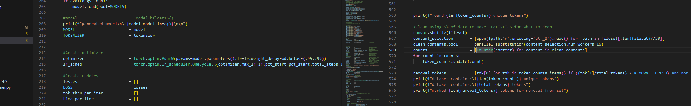
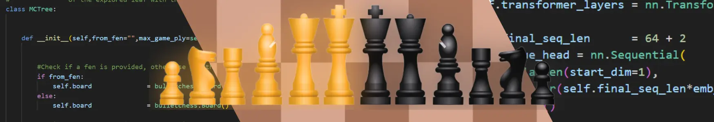

1 Billion Parameter LLM
My toy LLM built over a few months. A journey of finding data, hyperparameter tuning, finding large compute, and building a neat UI to interact with it. I coded this one in Pytorch and spent a while actually making things tidy.

Neural Network Self-Taught Chess Bot
A Python implementation of an RL chess bot. Coded from hand but heavily using DeepMinds's AlphaZero algorithm. A great project for learning hardware and optimizing compute given your bottlenecks.